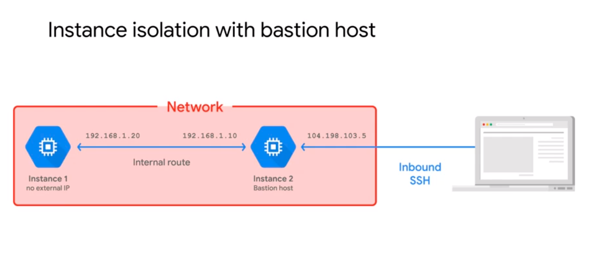

Virtual Private Cloud¶
GCP’s Virtual Private Cloud (VPC) supports networking with VM instances, Kubernetes Engine containers, and the App Engine flexible environment. A VPC network is an essential component of linking with VM instances, containers, or App Engine applications. Therefore, each GCP project creates a default network a soon as any of these services are started.
The GCP supports 3 different Virtual Private Cloud (VPC) network types:
Default
Auto mode
Custom mode
The default setup has one subnet per region and pre-set firewall rules. The Auto mode option includes regional IP allocation and a fixed /20 subnet per region, it comes with one subnet per region. The custom mode does not setup default subnets, it allows full control of IP ranges as well as regional IP allocation.
Note
Auto mode networks
Auto mode networks may be upgraded to Custom mode, but this can not be reverted.
They include routes, subnets, and firewall rules.
They are not recommended for production environments. The IP ranges are assigned for you.
ping -c 3 $IP-Address
Expect positive ping results for internal IPs only if the instance exists on the same network.
Expect positive ping results for external IPs only if you have a firewall rule that allows ICMP incoming.
You can connect using internal IP addresses from different network by using options such as VPC peering.
Networks¶
Networks allow you to isolate systems. Different VMs, for example may exist on different networks. VMs on the same network can communicate using their internal IPs (which are actually mapped by DNS), even if they are in different regions. You can ping a VM instance by its name, for example, because VPC networks have an internal DNS service that allows you to address instances by their DNS names rather than their internal IP addresses. This is a very useful feature, because the internal IP address can change when you delete and re-create an instance.
Conversely, even if VMs are in the same region, if they are on different networks they must use their external IPs to communicate.
VPC networks function as a distributed firewall, with the firewall rules enforced across the entire network unless set to a specific instance only.
To view your firewall rules use:
gcloud compute firewall-rules list --sort-by=NETWORK
VPN Networking¶
By leveraging VPN networks it becomes possible to connect VMs in different zones with subnets. A single firewall rule can apply to all VMs on that subnet, even though they are in different zones.
Subnets¶
Every subnet has 4 reserved IP addresses, the first 2 are assigned to the network and the subnet’s gateway. The final 2 addresses are also reserved, with the last being used as the broadcast address.
Overly-large subnets can cause conflicts, be cautious and do not scale a subnet beyond current usage needs.
To create a subnet from the cloud shell cli:
To create a custom network:
gcloud compute networks create mynet --subnet-mode=custom
To create a custom subnet:
gcloud compute networks subnets create privatesubnet-us --network=privatenet --region=us-central1 --range=172.16.0.0/24
To view your networks:
gcloud compute networks list
To create a custom network:
gcloud compute networks create $my-net1 --subnet-mode=custom
To provide this network with firewall rules:
gcloud compute firewall-rules create $my-firewall-custom1 --network my-net1 --allow= tcp, udp, icmp -- source=ranges $IP-range gcloud compute firewall-rules create $my-firewall-custom2 --network my-net1 --allow= tcp:22, tcp:3389, icmp
But remember a network is just a collection of subnets. Now you have a network name to group them by, use:
To create a subnet:
gcloud compute networks create $manage-subnets --region=us-central1 --range=10.130.0.0/20
To create a 2nd subnet:
gcloud compute networks create $manage-subnets --region=us-central1 --range=10.130.0.0/20
To view these networks:
gcloud compute networks list
Instance Isolation¶
A bastion host acts to isolate an instance for you.
